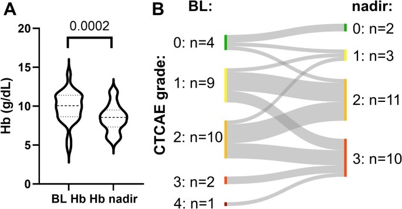
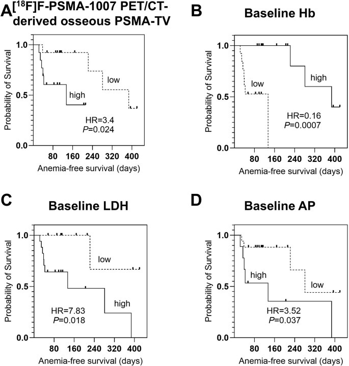
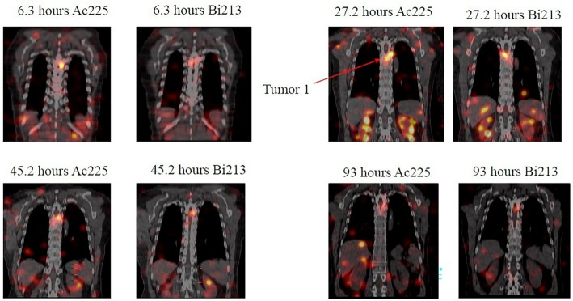

1729 — Suy tủy do xạ trị hạt alpha ²²⁵Ac-PSMA: phân độ CTCAE, liều tủy RBE = 5 và ngưỡng dừng / Hematologic toxicity of ²²⁵Ac-PSMA alpha therapy
Tags: pattern:suy-tuy pattern:thieu-mau pattern:giam-tieu-cau pattern:giam-bach-cau pattern:giam-ba-dong pattern:di-can-tuy-xuong vung:tuy-xuong vung:toan-than score:CTCAE score:RBE protocol:PSMA-PET-CT protocol:SPECT-CT protocol:dosimetry protocol:CBC incidentaloma:di-can-tuy-xuong
Mức chắc chắn (certainty): tổng hợp y văn (literature synthesis) — số liệu từ 1 phân tích gộp 16 nghiên cứu/1.102 bệnh nhân, 1 đoàn hệ hồi cứu 488 bệnh nhân (WARMTH Act), 1 đoàn hệ 89 bệnh nhân/151 chu kỳ theo dõi độc tính dài hạn, 1 nghiên cứu 26 bệnh nhân định lượng nguy cơ bằng PSMA PET/CT, 1 thử nghiệm pha I 16 bệnh nhân với ²²⁵Ac-PSMA-CY313, 1 nghiên cứu 43 vs 116 bệnh nhân so sánh ²²⁵Ac với ¹⁷⁷Lu, và 1 nghiên cứu định liều SPECT/CT 4 bệnh nhân (RBE = 5). Không có RCT về ngưỡng dừng/giảm liều của ²²⁵Ac; phần “khi nào dừng, khi nào truyền máu/G-CSF” là thực hành chuẩn suy ra từ CTCAE + huyết học, đã ghi rõ.
Vì sao bài này quan trọng: ²²⁵Ac-PSMA là xạ trị hạt alpha đang được dùng trong nghiên cứu/compassionate use cho ung thư tuyến tiền liệt kháng cắt tinh hoàn (mCRPC). Bác sĩ CĐHA nhìn PSMA PET/CT trước trị liệu và SPECT/CT sau trị liệu, nhưng câu hỏi quyết định lại nằm ở công thức máu: bệnh nhân này có đủ tủy để nhận chu kỳ tiếp theo không? Suy tủy là lý do bỏ chu kỳ phổ biến, trong khi suy tủy do di căn tủy xương lại là bệnh tiến triển — hai thứ trông giống nhau trên hình ảnh nhưng xử trí ngược nhau. Bài này nối liều tủy RBE = 5 với phân độ CTCAE và quyết định dừng/truyền máu/G-CSF.
1. Tổng quan bệnh học – cơ chế hình ảnh – vì sao hạt alpha vẫn đánh vào tủy
- Vật lý ²²⁵Ac: chu kỳ bán rã 9,9 ngày, phân rã qua ²²¹Fr → ²¹⁷At → ²¹³Bi → ²¹³Po → ²⁰⁹Pb → ²⁰⁹Tl, phát 4 hạt alpha với tổng năng lượng ~28 MeV. Hạt alpha có quãng chạy 50–100 µm, LET ~80 keV/µm — giết tế bào rất mạnh nhưng chỉ trong vài lớp tế bào. So sánh: hạt beta của ¹⁷⁷Lu có quãng chạy tới ~2 mm và tạo hiệu ứng crossfire sang tế bào bên cạnh.
- Vì sao tủy vẫn bị: tủy xương không biểu hiện PSMA đáng kể, nên liều tủy chủ yếu đến từ (1) hoạt độ còn trong máu, (2) hạt alpha/đồng vị con phân bố lại (²²¹Fr, ²¹³Bi), và (3) tổn thương di căn trong tủy. Vì quãng chạy cực ngắn, liều trung bình của tủy thấp nhưng phân bố liều không đồng nhất: ổ di căn trong tủy nhận liều rất cao, vùng tủy lành gần như không — đây là lý do liều trung bình không dự báo hết suy tủy.
- Định lượng liều (RBE = 5): trong nghiên cứu SPECT/CT với 200 µCi (≈ 7,4 MBq) ²²⁵Ac-PSMA-CY313 mỗi 8 tuần, liều tủy đỏ 0,16 ± 0,09 Gy (hệ số 0,02 ± 0,01 Gy/MBq) theo RBE = 5; liều vật lý tương ứng chỉ ~0,032 Gy. Cùng lần đó, thận 1,55 ± 0,38 Gy (hệ số 0,23 Gy/MBq), gan 1,07 ± 0,19 Gy; tỷ số u/tủy = 14,84 — cao nhất trong các cơ quan nguy cấp. Giới hạn thận theo EANM cho trị liệu chia liều là 23–27 Gy.
- Ngưỡng tủy để so sánh: với ¹⁷⁷Lu-DOTATATE, một phác đồ định liều dừng khi liều tủy > 2 Gy (hoặc thận > 23 Gy) — mốc này lấy từ nghiên cứu định liều Garske-Román, chưa được xác nhận cho ²²⁵Ac; “2 Gy” chỉ là mốc tham chiếu, không phải luật.
- Vì sao thiếu máu nổi bật hơn giảm bạch cầu: hồng cầu sống ~120 ngày, tiểu cầu 7–10 ngày, bạch cầu trung tính 6–8 giờ. Tủy bị ức chế từ từ → Hb tụt dần qua nhiều chu kỳ, tiểu cầu tụt nhanh hơn nhưng hồi phục nhanh hơn, bạch cầu ít bị nhất. Vì vậy thiếu máu là độc tính tích lũy, còn giảm bạch cầu thường thoáng qua.
- Tần suất (định lượng):
- Phân tích gộp 16 nghiên cứu/1.102 bệnh nhân: độ ≥ 3 thiếu máu 9%, giảm tiểu cầu 5%, giảm bạch cầu 4%, độc thận 4%; khô miệng 84%; PSA giảm ≥ 50% 63%; sống trung vị 12,72 tháng.
- WARMTH Act (488 bệnh nhân, trung vị 2 chu kỳ): độ ≥ 3 thiếu máu 13%, giảm bạch cầu 4%, giảm tiểu cầu 7%, độc thận 5%; không có tử vong do điều trị.
- Đoàn hệ dài hạn 89 bệnh nhân/151 chu kỳ (71 có theo dõi; một phần là TANDEM ²²⁵Ac + ¹⁷⁷Lu): thiếu máu G3 21,1% (15/71), giảm bạch cầu G3 8,4% (6/71), giảm tiểu cầu G3/G4 19,7% (14/71), độc thận G3 1,4%, độc gan G3 8,4%. Độc tính huyết học gắn với di căn tủy xương nặng hoặc đã hóa trị trước.
- 26 bệnh nhân ²²⁵Ac-PSMA-I&T (trung bình 3 chu kỳ): 38% (10/26) đạt thiếu máu G3; Hb giảm có ý nghĩa (p = 0,0002); Hb nền là yếu tố dự báo mạnh nhất (p = 0,002); thể tích u PSMA trong xương (osseous PSMA-TV) cũng dự báo (mỗi p ≤ 0,037).
- 16 bệnh nhân ²²⁵Ac-PSMA-CY313 (200 µCi mỗi 8 tuần): thiếu máu 68,8% (G3 6,3%), giảm bạch cầu 25% (toàn bộ G1–G2), không G4; Hb 117,7 ± 19,2 → 105,0 ± 19,7 g/L (p = 0,012).
- So sánh ²²⁵Ac (43) vs ¹⁷⁷Lu (116): thiếu máu 58% vs 66%, giảm bạch cầu 57% vs 59%, giảm tiểu cầu 48% vs 47% — chủ yếu G1–G2, không tử vong do điều trị.
- So với ¹⁷⁷Lu trong VISION: độ ≥ 3 thiếu máu 12,9%, giảm tiểu cầu 7,9%, giảm bạch cầu 7,8%.
2. Mẫu hình + chẩn đoán phân biệt theo thời điểm và dòng tế bào (Gamut)
Ba câu hỏi trước khi kết luận “do xạ trị”: (1) giảm dòng nào, mức nào? (2) xuất hiện sau chu kỳ thứ mấy? (3) có bằng chứng di căn tủy/progression không?
- Nhóm A — suy tủy do xạ trị, sớm (sau 1–2 chu kỳ): giảm tiểu cầu ± bạch cầu, đáy sau 2–4 tuần, hồi phục 4–6 tuần; thiếu máu nhẹ, đáp ứng với thời gian. Trên thực nghiệm, các dòng tế bào bình thường hóa trong 35–42 ngày.
- Nhóm B — suy tủy tích lũy (sau 3–6 chu kỳ): thiếu máu tiến triển, MCV tăng nhẹ, tiểu cầu giảm dần; gắn với tổng liều tủy, hóa trị trước, tuổi, di căn tủy.
- Nhóm C — di căn tủy xương tiến triển: giảm ba dòng, đau xương, LDH/ALP tăng, PSMA PET/CT có ổ tủy mới hoặc tăng thể tích, có thể superscan (xương ngấm lan tỏa, mô mềm mờ). Đây là progression, không phải độc tính — không giảm liều, không dừng vì “suy tủy”, mà đánh giá lại trị liệu.
- Nhóm D — thiếu máu do thiếu sắt: MCV nhỏ, ferritin thấp, TSAT thấp, không liên quan chu kỳ; gặp ở bệnh nhân xuất huyết tiêu hóa, lấy máu nhiều lần.
- Nhóm E — thiếu B12/folate: MCV lớn, LDH tăng, giảm tiểu cầu ± thần kinh; hay bị bỏ qua ở người lớn tuổi.
- Nhóm F — thiếu máu do bệnh thận mạn: eGFR giảm, erythropoietin thấp, hồng cầu bình thường hoặc nhược sắc; ²²⁵Ac có thể gây giảm eGFR ≥ 20% ở 31% bệnh nhân.
- Nhóm G — mất máu/DIC: giảm Hb cấp, tiểu cầu giảm, INR/aPTT rối loạn, schistocyte; tìm chảy máu tiêu hóa, ổ loét, can thiệp.
- Nhóm H — thuốc khác: docetaxel/cabazitaxel (giảm bạch cầu, thiếu máu), kháng sinh dài ngày, thuốc giảm đau/NSAID (xuất huyết), thuốc chống đông.
- Nhóm I — nhiễm trùng/huyết khối nhiễm: sốt, CRP tăng, cấy dương; giảm bạch cầu do nhiễm hoặc do thuốc, không phải chỉ xạ trị.
- Nhóm J — t-MDS/AML (muộn): giảm ba dòng kéo dài > 3–6 tháng sau khi ngừng, loạn sản trên tủy đồ, cytopenia không hồi phục; cần sinh thiết tủy.
- Nhóm K — bắt chước xét nghiệm: pseudothrombocytopenia do EDTA (tiểu cầu kết cụm), hemodilution (Hb giảm sau truyền dịch), mẫu máu tan; kiểm tra bằng ống citrate/soi phết.

(A) Hb nền so với Hb đáy (p = 0,0002). (B) Biểu đồ Sankey: 10/26 bệnh nhân chuyển sang thiếu máu G3 ở đáy; phần lớn bệnh nhân G2 nền chuyển thành G3; một ca G4 nền được xử trí. Đây là lý do phải đo Hb trước mỗi chu kỳ, không chỉ dựa vào “bệnh nhân trông ổn”. Nguồn: Widjaja L et al., Eur J Nucl Med Mol Imaging 2026 (PMC13197253) Fig. 4, CC BY 4.0.3. Bảng so sánh phân biệt (ma trận đối chiếu)
| Thực thể (entity) | Hình ảnh/xét nghiệm điển hình | Chốt vào (rule-in) | Chốt loại (rule-out) | Gợi ý xác nhận |
|---|---|---|---|---|
| Suy tủy do ²²⁵Ac-PSMA | Giảm dòng sau 2–4 tuần mỗi chu kỳ; tiểu cầu ± bạch cầu trước, Hb tích lũy sau 3–6 chu kỳ; tủy trên MRI/CT không có ổ mới | Thời gian khớp chu kỳ + hồi phục 4–6 tuần + không có ổ tủy mới trên PSMA PET | Có ổ tủy mới/tăng PSMA-TV + LDH/ALP tăng → progression; MCV nhỏ/ferritin thấp → thiếu sắt | CBC + reticulocyte mỗi 1–2 tuần; PSMA PET/CT trước chu kỳ |
| Di căn tủy tiến triển | Giảm ba dòng, đau xương, PSMA PET: ổ tủy mới, lan tỏa (“superscan”), LDH/ALP tăng | Tổn thương tủy mới/tăng thể tích trên PSMA PET + LDH/ALP tăng + đau xương | CBC hồi phục giữa các chu kỳ, không ổ mới → độc tính | PSMA PET/CT; MRI tủy (T1 + STIR/DWI); sinh thiết nếu cần |
| Thiếu sắt | MCV nhỏ, Hb thấp, ferritin thấp, TSAT < 20%, tiểu cầu bình thường | Ferritin thấp + TSAT thấp + đáp ứng sắt | Ferritin bình thường/cao, TSAT bình thường → không thiếu sắt | Ferritin, TSAT, nội soi tiêu hóa nếu mất máu |
| Thiếu B12/folate | MCV lớn, LDH tăng, giảm tiểu cầu, có thể thần kinh ngoại biên | B12/folate thấp + MCV lớn + đáp ứng bổ sung | B12/folate bình thường → loại | B12, folate, homocysteine/MMA |
| Thiếu máu bệnh thận | eGFR giảm, Hb thấp, hồng cầu bình thường, không giảm tiểu cầu | eGFR < 60 + Hb thấp + EPO thấp | eGFR bình thường, có giảm tiểu cầu → do tủy | Creatinin/eGFR, erythropoietin, sắt |
| Mất máu/DIC | Hb tụt cấp, tiểu cầu giảm, INR/aPTT rối loạn, schistocyte | Schistocyte + INR/aPTT rối loạn + fibrinogen thấp | INR/aPTT bình thường, không schistocyte | INR, aPTT, fibrinogen, haptoglobin, nội soi |
| Thuốc (taxane, kháng sinh, chống đông) | Giảm bạch cầu/tiểu cầu theo thuốc; sốt nếu giảm bạch cầu | Khớp thời điểm dùng thuốc + cải thiện khi ngừng | Không dùng thuốc liên quan | Bệnh sử thuốc, CBC trước/sau |
| Nhiễm trùng huyết | Sốt, CRP/PCT tăng, cấy dương, giảm bạch cầu hoặc tăng | Cấy dương + ổ nhiễm + đáp ứng kháng sinh | Không sốt, cấy âm, CRP bình thường | Cấy máu/nước tiểu, CRP, PCT, CT ổ nhiễm |
| t-MDS/AML | Giảm ba dòng kéo dài, loạn sản, blast trên tủy đồ; không hồi phục sau 3–6 tháng | Cytopenia kéo dài + loạn sản/blast + bất thường di truyền | Hồi phục sau 4–6 tuần, không loạn sản | Tủy đồ + sinh thiết + NGS/FISH |
| Pseudothrombocytopenia | Tiểu cầu thấp không chảy máu, kết cụm tiểu cầu trên phết | Tiểu cầu bình thường khi lấy ống citrate/soi phết | Tiểu cầu thấp thật + chảy máu | Lặp CBC ống citrate, soi phết |

Bốn yếu tố dự báo sống không thiếu máu: (A) osseous PSMA-TV cao → HR 3,4 (P = 0,024); (B) Hb nền thấp → HR 0,16 (P = 0,0007, Hb cao bảo vệ); (C) LDH nền cao → HR 7,83 (P = 0,018); (D) ALP nền cao → HR 3,52 (P = 0,037). Đây là các biến lấy được ngay trên PSMA PET/CT và xét nghiệm máu trước chu kỳ 1. Nguồn: Widjaja L et al., Eur J Nucl Med Mol Imaging 2026 (PMC13197253) Fig. 5, CC BY 4.0.4. Protocol: phân độ CTCAE, theo dõi và ngưỡng dừng
Trước chu kỳ 1 (bắt buộc):
- CBC + reticulocyte, ferritin/TSAT, B12/folate, LDH, ALP, creatinin/eGFR, điện giải, đông máu nếu nghi chảy máu.
- PSMA PET/CT: đo thể tích u toàn thân (total tumor volume, TTV) và osseous PSMA-TV; ghi nhận superscan (xương ngấm lan tỏa, mô mềm mờ) — vừa là dấu hiệu bệnh nặng, vừa là yếu tố nguy cơ suy tủy.
- MRI tủy (T1 + STIR/DWI) nếu nghi di căn tủy lan tỏa hoặc chèn ép tủy; CT nếu cần đánh giá xương.
- Đánh giá tủy dự trữ: nếu Hb < 9 g/dL, PLT < 100.000, ANC < 1.500 trước chu kỳ → cân nhắc hoãn/giảm liều (quyết định cá thể hóa; chưa có ngưỡng RCT cho ²²⁵Ac).
Phân độ CTCAE v5.0 (dùng đúng ngưỡng):
| Dòng tế bào | Độ 1 | Độ 2 | Độ 3 | Độ 4 |
|---|---|---|---|---|
| Hb | < LLN – 10,0 g/dL | 8,0 – < 10,0 g/dL | < 8,0 g/dL | đe dọa tính mạng |
| Tiểu cầu | 75.000 – < 100.000/µL | 50.000 – < 75.000/µL | 25.000 – < 50.000/µL | < 25.000/µL |
| Bạch cầu trung tính | 1.500 – < 2.000/µL | 1.000 – < 1.500/µL | 500 – < 1.000/µL | < 500/µL |
| Bạch cầu | < LLN – 3.000/µL | < 3.000 – 2.000/µL | < 2.000 – 1.000/µL | < 1.000/µL |
Theo dõi trong chu kỳ:
- CBC mỗi 2 tuần trong chu kỳ đầu; mỗi 4 tuần các chu kỳ sau; ngay khi sốt/chảy máu/mệt mới.
- Đáy thường 2–4 tuần; hồi phục 4–6 tuần (thực nghiệm: 35–42 ngày). Chu kỳ cách 8 tuần là khoảng đủ để tủy hồi phục ở đa số.
- Trước mỗi chu kỳ: chỉ tiếp tục khi Hb ≥ 8 g/dL, PLT ≥ 50.000/µL, ANC ≥ 1.000/µL (ngưỡng thực hành; cá thể hóa nếu bệnh tiến triển nhanh).
Xử trí (thực hành chuẩn):
- Thiếu máu: truyền hồng cầu khi Hb < 7 g/dL hoặc < 8 g/dL có triệu chứng; sắt IV nếu thiếu sắt; EPO chỉ cân nhắc cá thể (nguy cơ huyết khối/u).
- Giảm tiểu cầu: truyền khi PLT < 10.000/µL, hoặc < 20.000/µL nếu sốt/chảy máu; tránh NSAID/tiêm bắp.
- Giảm bạch cầu: G-CSF khi sốt giảm bạch cầu hoặc ANC < 500/µL; không dùng dự phòng thường quy nếu không có chỉ định.
- Nhiễm trùng: cấy + kháng sinh phổ rộng sớm; không chờ kết quả nếu sốt + ANC thấp.
- Dừng/giảm liều: G3 kéo dài hoặc G4 → hoãn, chờ hồi phục; giảm 20–25% hoạt độ chu kỳ sau; G4 tái diễn hoặc giảm ba dòng không hồi phục → ngừng. Di căn tủy tiến triển không phải lý do giảm liều — đánh giá lại đáp ứng.
- Ngưỡng liều: theo dõi liều tủy tích lũy nếu có định liều; > 2 Gy là mốc tham chiếu từ ¹⁷⁷Lu-DOTATATE, chưa được xác nhận cho ²²⁵Ac; thận 23–27 Gy là giới hạn EANM.
flowchart TD
A[CBC trước chu kỳ 225Ac] --> B{Độ CTCAE}
B -->|"G1"| C[Tiếp tục, theo dõi 2 tuần]
B -->|"G2"| D{Xét nghiệm nguyên nhân: sắt, B12, eGFR, máu}
D -->|Thiếu sắt/B12| E[Bổ sung + tiếp tục]
D -->|Không nguyên nhân khác| F[Hoãn 1-2 tuần, lặp CBC]
B -->|"G3"| G[Hoãn; truyền máu/tiểu cầu nếu có chỉ định]
G --> H{Hồi phục về G1-2?}
H -->|Có| I[Giảm 20-25% hoạt độ, tiếp tục]
H -->|Không sau 4-6 tuần| J[Ngừng; sinh thiết tủy, loại trừ t-MDS/progression]
B -->|"G4"| K[Ngừng; hồi sức, G-CSF, truyền máu]
K --> L[Đánh giá lại PSMA PET/CT + tủy đồ]

*Hình ảnh SPECT/CT của một bệnh nhân sau 200 µCi ²²⁵Ac-PSMA-CY313, tại 6,3 – 27,2 – 45,2 – 93 giờ: mỗi cặp là ²²⁵Ac (trái) và ²¹³Bi (phải). Tumor 1 ngấm rõ và giữ lâu; thận là cơ quan ngấm cao nhất; tủy đỏ nhận liều trung bình thấp (0,16 Gy RBE = 5) nhưng không đồng nhất. Đây là lý do “liều trung bình thấp” không loại trừ suy tủy. Nguồn: Zhang H et al., EJNMMI Phys 2025 (PMC12858698) Fig. 3, CC BY-NC-ND 4.0 — nguyên bản.*5. Biến thể bình thường và cạm bẫy
- Tủy đỏ tái chuyển (red marrow reconversion) trên MRI: sau hóa trị/G-CSF, tủy đỏ lan ra xương dài; T1 giảm tín hiệu, STIR tăng — trông như di căn lan tỏa. Phân biệt: tủy đỏ đối xứng, theo trục xương, không phá vỡ vỏ, không có khối mô mềm; di căn không đối xứng, phá hủy xương, có thành phần mô mềm. Dùng DWI/ADC và so sánh với PSMA PET.
- PSMA PET sau G-CSF: tủy tăng ngấm lan tỏa do tăng sinh tủy, không phải progression; chụp lại sau 2–4 tuần hoặc đối chiếu PSMA-TV thay vì đọc “xương sáng hơn”.
- Superscan: xương ngấm lan tỏa, mô mềm mờ, thận mờ — dấu hiệu di căn tủy lan rộng; nhưng cũng làm giảm độ nhạy phát hiện ổ mới, dễ đọc nhầm là “ổn định”.
- “Suy tủy” do hemodilution: Hb giảm 1–2 g/dL sau truyền dịch/cản quang, không kèm giảm tiểu cầu; đo lại sau 24 giờ.
- Pseudothrombocytopenia: tiểu cầu thấp giả do EDTA; bệnh nhân không chảy máu, phết có cụm tiểu cầu; lặp bằng ống citrate.
- Thiếu máu do bệnh nền: ferritin/TSAT thấp hoặc B12 thấp rất hay gặp ở người lớn tuổi/đã hóa trị; đừng quy hết cho ²²⁵Ac.
- Đừng nhầm “Hb ổn định” với “tủy ổn định”: Hb có thể còn bình thường trong khi tiểu cầu đã tụt; luôn đọc cả 3 dòng.
- Trẻ/người trẻ: ²²⁵Ac chủ yếu dùng ở mCRPC người lớn; nếu dùng trong nghiên cứu khác, dự trữ tủy và liều tủy phải tính lại theo cân nặng/diện tích — không áp dụng nguyên số người lớn.
6. Tự lượng giá — Blind Quiz
Ca 1 — 26 bệnh nhân mCRPC nhận ²²⁵Ac-PSMA-I&T, trung bình 3 chu kỳ. Nhìn biểu đồ, mô tả dịch chuyển độ thiếu máu trước khi mở đáp án.
- Hỏi: (1) Hb đáy khác Hb nền thế nào? (2) Bao nhiêu bệnh nhân chuyển sang G3? (3) Vì sao phải đo Hb trước mỗi chu kỳ?
Bấm để hiện đáp án
- Findings: (A) Hb nền cao hơn Hb đáy có ý nghĩa (p = 0,0002); (B) Sankey: nhóm G2 nền 10 người chuyển thành G3 10 người ở đáy; tổng 10/26 (38%) thiếu máu G3; một ca G4 nền được xử trí.
- Chẩn đoán: suy tủy do ²²⁵Ac-PSMA, chủ yếu thiếu máu tích lũy.
- Vì sao đo trước mỗi chu kỳ: Hb có thể giảm âm thầm giữa các lần khám; quyết định tiếp tục/hoãn dựa trên giá trị trước chu kỳ, không dựa vào triệu chứng.
- Nguồn ảnh: Widjaja L et al., Eur J Nucl Med Mol Imaging 2026 (PMC13197253) Fig. 4, CC BY 4.0.
Ca 2 — Cùng đoàn hệ, nhìn bốn đường Kaplan–Meier. Yếu tố nào dự báo mạnh nhất?
- Hỏi: (1) Biến nào có HR lớn nhất? (2) Hb nền cao bảo vệ hay là yếu tố nguy cơ? (3) Dùng các biến này thế nào trước chu kỳ 1?
Bấm để hiện đáp án
- Findings: (A) osseous PSMA-TV cao → HR 3,4 (P = 0,024); (B) Hb nền cao → HR 0,16 (P = 0,0007) — bảo vệ; (C) LDH cao → HR 7,83 (P = 0,018); (D) ALP cao → HR 3,52 (P = 0,037).
- Chẩn đoán: nguy cơ thiếu máu tăng khi tủy đã bị thay thế nhiều (PSMA-TV cao), Hb nền thấp, LDH/ALP cao (bệnh nặng, tủy xương bị xâm lấn).
- Ứng dụng: trước chu kỳ 1, ghi Hb, LDH, ALP, osseous PSMA-TV; nếu Hb thấp + PSMA-TV cao → tư vấn nguy cơ, cân nhắc giảm hoạt độ/hoãn, theo dõi CBC sát.
- Nguồn ảnh: Widjaja L et al., Eur J Nucl Med Mol Imaging 2026 (PMC13197253) Fig. 5, CC BY 4.0.
Ca 3 — Hình SPECT/CT sau ²²⁵Ac-PSMA-CY313. Hai cột ảnh khác nhau ở đâu, và điều đó nói gì về liều tủy?
- Hỏi: (1) Hai cột là hai đồng vị nào? (2) Cơ quan nào ngấm cao nhất? (3) Vì sao tủy nhận liều trung bình thấp mà vẫn suy?
Bấm để hiện đáp án
- Findings: mỗi cặp thời điểm (6,3 – 27,2 – 45,2 – 93 giờ) có ²²⁵Ac (trái) và ²¹³Bi (phải); Tumor 1 ngấm rõ và giữ lâu; thận ngấm cao nhất; tủy không thấy rõ trên ảnh.
- Chẩn đoán/ý nghĩa: liều tủy đỏ 0,16 ± 0,09 Gy (RBE = 5) mỗi 200 µCi, thấp hơn thận 1,55 Gy; nhưng phân bố liều không đồng nhất và tủy đã bị hóa trị/di căn làm giảm dự trữ → suy tủy vẫn xảy ra.
- Bài học: liều trung bình thấp không loại trừ độc tính; phải theo dõi CBC và PSMA-TV, không chỉ dựa vào định liều.
- Nguồn ảnh: Zhang H et al., EJNMMI Phys 2025 (PMC12858698) Fig. 3, CC BY-NC-ND 4.0.
Bài liên quan chéo
- 1711 – Dosimetry cá thể hóa cho ²²⁵Ac: liều u – thận – tủy và ngưỡng dừng
- 1695 – ²²⁵Ac-DOTATATE sau thất bại ¹⁷⁷Lu ở PPGL: chọn bệnh nhân và độc thận–tủy
- 185 – Độc tính & theo dõi sau PRRT/¹³¹I-MIBG ở PPGL: suy tủy, độc thận
- 1718 – Gãy xương cùng sau xạ trị (MRI tủy, phân biệt di căn)
Không dùng để chẩn đoán độc lập khi chưa có người hướng dẫn.